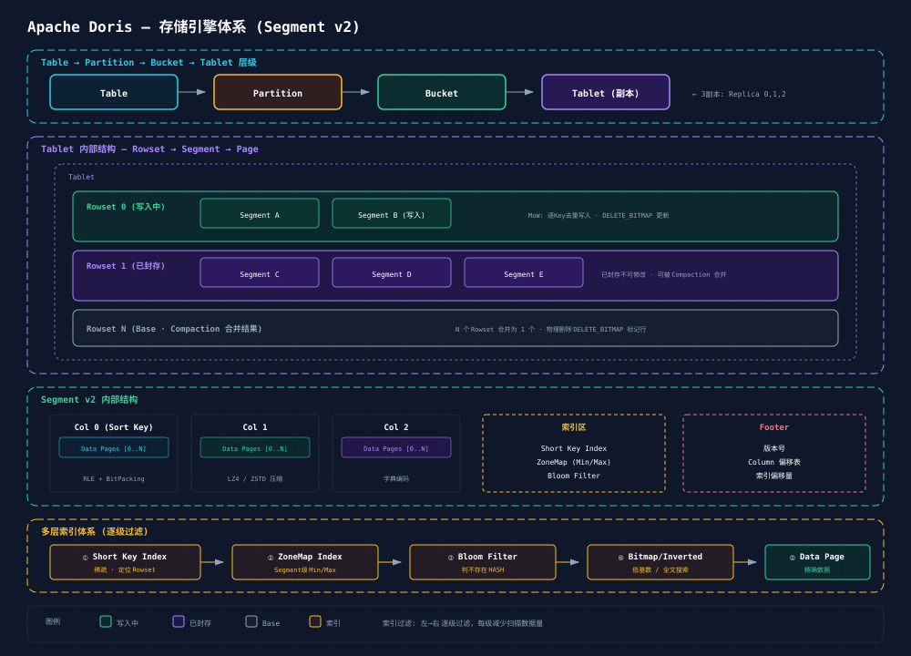

Doris 存储引擎采用自研 Segment v2 格式，基于列式存储思想，结合 LSM-tree 写入和高效 Compaction 策略。

Table
└── Partition (Range 分区)
└── Bucket (Hash 分桶)
└── Tablet (最小数据分发单元)
├── Rowset 0 (当前写入)
├── Rowset 1 (已封存)
├── ...
└── Rowset N
└── Segment(s) (列式数据文件)
├── Column 0: Data Pages
├── Column 1: Data Pages
├── ...
├── Short Key Index
├── ZoneMap Index (per Segment)
├── Bloom Filter (optional)
└── Footer (元数据)Doris 的 Segment 是自研列式存储格式，核心特点：
数据组织：
元数据布局：
与 Parquet 的对比：
| 维度 | Doris Segment v2 | Apache Parquet |
|---|---|---|
| 设计哲学 | OLAP 写入优化，低延迟 | 数据湖通用，压缩优先 |
| Page 大小 | 1MB (可配置) | ~1MB (Row Group) |
| 索引粒度 | Segment + Page 级 | Row Group + Page 级 |
| 编码方式 | RLE + BitPacking + LZ4/ZSTD | Dictionary + RLE + Delta |
| 主键支持 | 原生 Prefix Sort Key | 无 |
| 更新支持 | MoW DELETE_BITMAP | 不可变 |
Doris Compaction 负责将多个小 Rowset 合并为大 Rowset，减少碎片、加速查询。
Compaction 触发机制：
| 类型 | 触发条件 | 作用 |
|---|---|---|
| Cumulative Compaction | Cumulate Point 之前的 Rowset 数量 > 阈值 | 合并大量小 Rowset |
| Base Compaction | Base Rowset 版本过期 | 合并所有 Rowset 为一个 |
| Quick Compaction | MoW 表 Segment 数 > 阈值 | 局部合并 Delete Bitmap 过多的小 Segment |
| Vertical Compaction | 宽表 (大 Column 数) | 按列组合并，减少内存开销 |
Compaction 流程：
MoW 是 Doris 2.1+ 的核心创新，在写入时处理主键冲突：
写入 MoW Tablet 流程：
1. Tablet Writer 接收数据 Batch
2. 按 Sort Key 排序内存数据
3. 逐 Key 查询 Tablet 内是否存在
├── 不存在 → 写入 Segment 新数据行
└── 存在 → 在现有 Segment 中标记旧行 Delete Bitmap
→ 写入 Segment 新数据行
4. Segment 文件写满 (默认 256MB) 后封存
5. Rowset 提交 (可见)DELETE_BITMAP：
Doris 索引分为内存索引和文件索引两类：
内存索引：
文件索引：